Station · 28 Sep: a readable Geiger chip, and a crosshair % that stays off the chart
Branch station/chip-pct-20260928, built on today's live Station (64124b6). Pushed, not deployed. Both items from your 13:30 notes are built and checked in a hidden browser at 1680 wide and at phone width (390).
In one minute
The Geiger chip is bigger, and its bar is as tall as its number. The number now matches the size of the price beside the ticker, and the coloured bar is exactly as tall as that number's capital letters. On the 8-chart walls the bar goes from 48 × 6 to 60 × 9 pixels, a modest step as you asked. On a 4-chart wall it's 76 × 10, on a 2-chart wall 83 × 10, and a single chart gets 112 × 12.
Zero is easier to see. A small tick above and below the bar marks the middle, in the reading's own green or red, so you can tell at a glance which way the bar grows.
The crosshair % no longer covers the chart. It now sits in the price strip on the right edge, as TradingView does: the price on the crosshair line, the % under it, and the words "from now" under that. Measured on every layout, including phone, the label starts at or right of the chart's edge.
Your question: yes, the % uses the current price. It's (price under the cursor ÷ current price − 1) × 100. "Current" is the live price, or the last bar's price when there's no live quote. That's unchanged; the "from now" label now says so on the pane.
The RSI fan is untouched, as asked, because you're redesigning it with the Indicator Lab.
Tests: 843 run, 825 pass. The 18 failures are exactly the 18 known ones; nothing new fails. 9 new checks were added.
1 · The Geiger chip
"Let's make the Geiger chip bigger. We have a ton of space there. Give it more space to see the green to red a little better. It seems undersized versus the numerical value — maintain proportions, match the height of the numerical value. Don't go too crazy on the 8-chart layouts."
The chip keeps its top-right place and the same rule: it grows right in green at or above zero and left in red below zero, on the same −1 to +1 scale as the Hub. I didn't touch the change that stopped the chip arriving late. What changed:
Number size: the same size as the price in the ticker badge on that chart (12 px on 8-up and phone, about 14 px on 2- and 4-up, 16 px on a single chart). Before, it was always 12 px.
Bar height: exactly the height of the number's capital letters. I measured this in the browser: 8.8 px against a letter height of 8.75 px at 12 px, and 10.1 against 10.13 at 14 px.
Bar length: it grows with the room the chart has, least on the crowded walls:
Layout (1680-wide screen)
One chart's size
Bar before
Bar now
8 charts (and 6)
419 × 277
48 × 6
60 × 8.8
4 charts
840 × 277
48 × 6
76 × 10.1
2 charts
840 × 554
48 × 6
83 × 10.1
1 chart alone
1680 × 1021
48 × 6
112 × 11.7
Phone (390 wide)
390 × 473
48 × 6
60 × 8.8
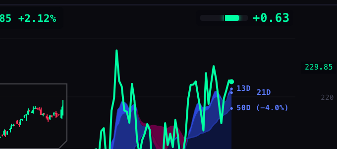
BEFORE · 8-up, MSFT: thin 48×6 bar; crosshair box "−3.61% 492.49" over the line and the 21D label
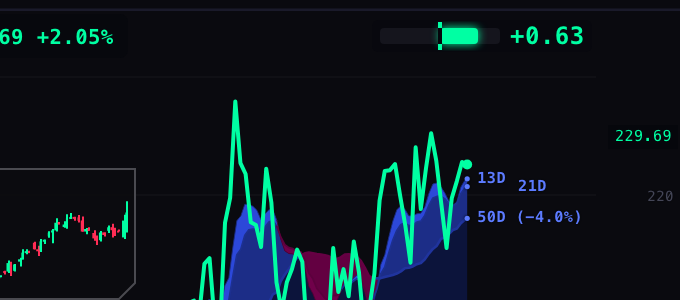
AFTER · 8-up, MSFT: bar as tall as "+0.71"'s capitals, zero tick; "492.49 / −3.60% / from now" in the price strip
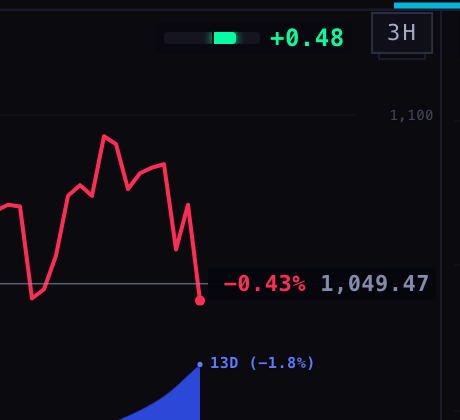
BEFORE · 2-up, MU
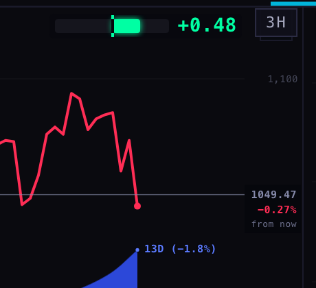
AFTER · 2-up, MU: 83×10 bar; the label reads "1049.47 / −0.27% / from now"
2 · The crosshair %
"I see the percentage thing, but you're taking over chart space. The percentage should be on the pane. Is the percentage based on the current price as a denominator — what % the price would need to change?"
Where it is now: in the price strip on the right edge of each chart, the column where the price scale's numbers are. It's a small stacked label: the price (grey, on the crosshair line), the % (green if the level is above the current price, red if below), and "from now" in small type.
Fitting the strip: each line shrinks just enough to fit the strip. A price too long for it, such as MU at 1,049.47, drops its thousands comma first ("1049.47"), as price scales usually do. Only prices of 10,000 or more, such as Bitcoin at 112,345.67, can still reach a few pixels (at most about 5) into the chart at the smallest text size.
What the % means: how far the price would have to move from where it is now to reach the level under your cursor. For example, "−8.9% from now" means the price would have to fall 8.9% to get there.
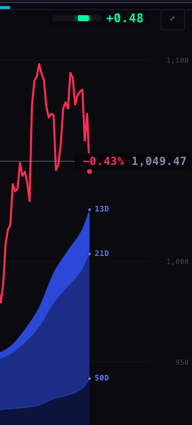
BEFORE · phone: "−0.43% 1,049.47" covers the last price dot
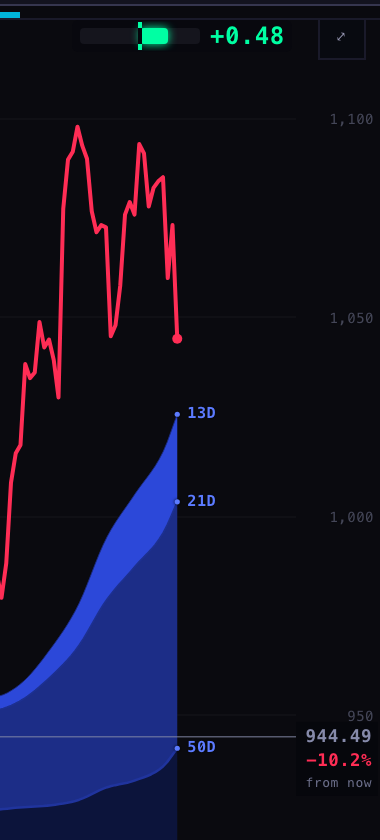
AFTER · phone: "944.49 / −10.2% / from now" in the strip
The before and after phone shots hovered at different heights. The measurement that matters is the label's left edge against the chart's right edge. After the change it was at or right of the edge on every layout checked (8-up 377/377, 2-up 798/798, single chart 1638/1638, phone 349/348 and 348/348).
Full walls
BEFORE · MAG 7, 8-up, 1680, crosshair on MSFT
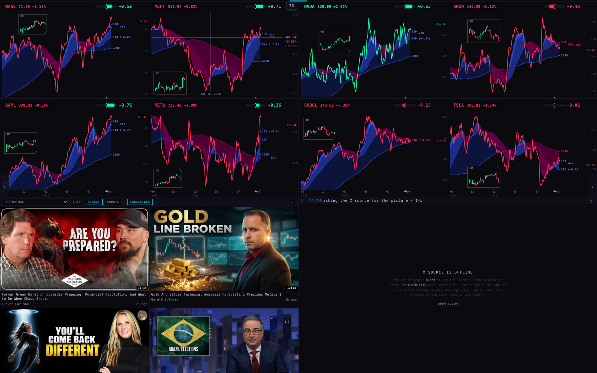
AFTER · MAG 7, 8-up, 1680, crosshair on MSFT
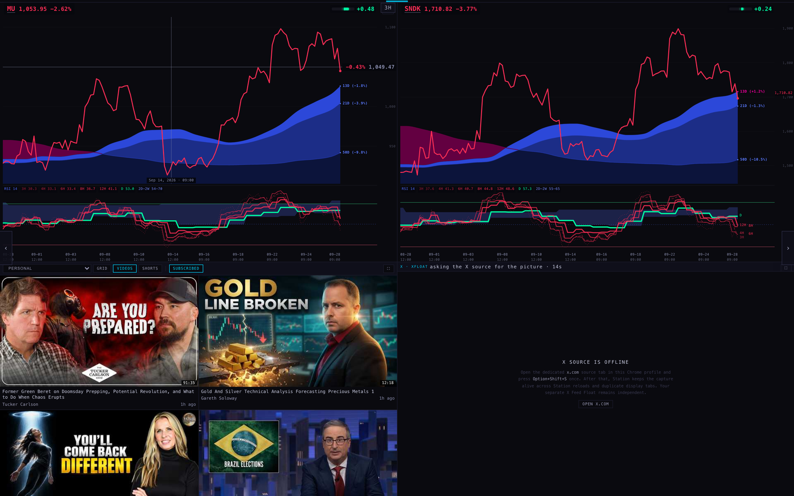
BEFORE · FOCUS 2, 2-up, 1680, crosshair on MUAFTER · FOCUS 2, 2-up, 1680, crosshair on MU
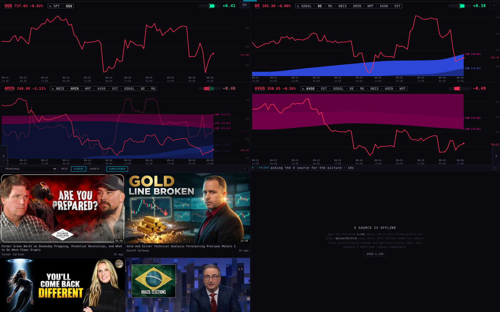
AFTER · INTRADAY 1H, 4-up: the ↻ lists still fit beside the bigger chips
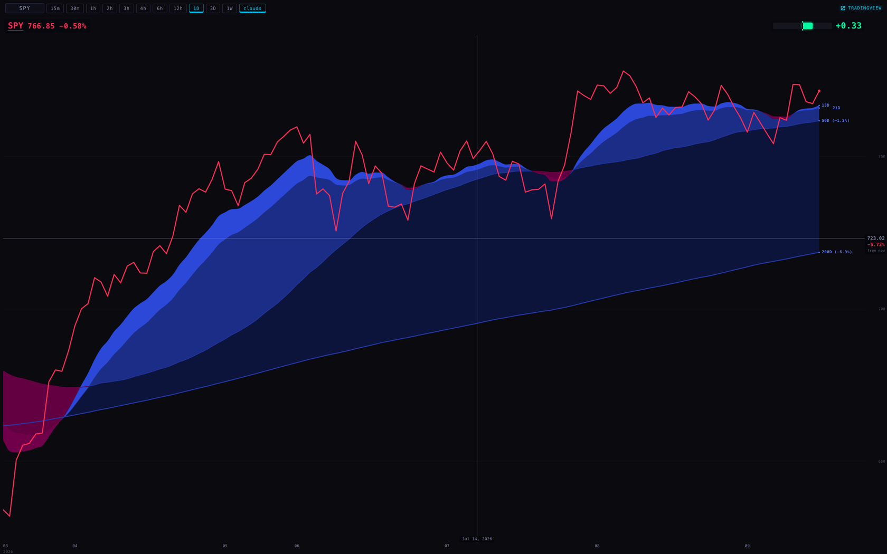
AFTER · SPY alone, 1680: 112×12 bar
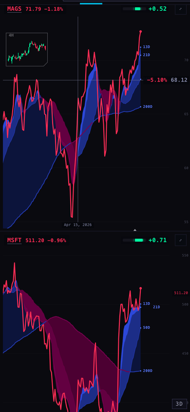
BEFORE · phone, MAG 7
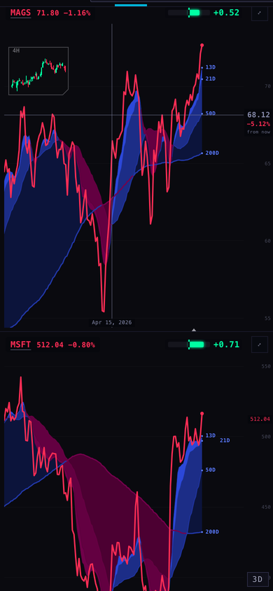
AFTER · phone, MAG 7, crosshair on MAGS
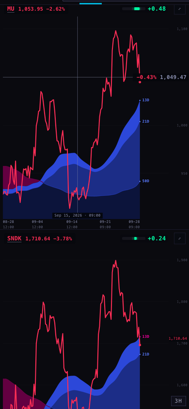
BEFORE · phone, FOCUS 2
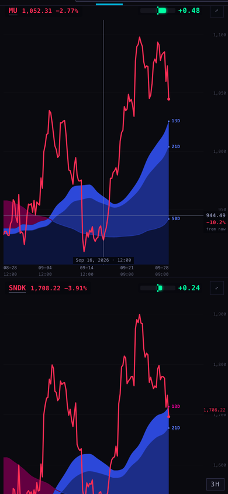
AFTER · phone, FOCUS 2, crosshair on MU
Where each number comes from
Geiger value and colour: unchanged. For stocks and funds it's the chart service's /geiger reading under the saved Equalizer; for futures, VIX, rates and crypto it's the retained non-equity Geiger row the Hub also uses.
Chip sizes: the pane sizes in the table were measured on the live wall layout in a hidden browser today. The rule is in _indicators/station-geiger-bar.js (chipSize).
Crosshair %: (price at the cursor ÷ current price − 1) × 100. The current price is the live quote, or the last bar's price when there's no quote. This is the same price the badge and the price line use.
Screenshots: real Chromium, hidden (headless), 1680 × 1050 and 390 × 844, with live data from the chart service. The chart service only answers requests that say they come from scintillahub.ai, so the test script fetched the data itself with that origin and passed it to the local page. Nothing was written anywhere.
What could be wrong
The bar's height uses the browser's "capital-letter height" unit. Current Chrome and Safari support it (Safari since 17.2). An older browser falls back to 70% of the number's size, which is within about half a pixel.
A price of 10,000 or more (Bitcoin, for example) can still reach up to about 5 px into the chart at the smallest text size. None of today's shots had one.
On the iPad profile the price strip is scaled with the pane. I didn't take an iPad-profile screenshot.
In the 4-up shot, one lower chip was caught mid-crossfade between two rotating names, so a green and a red chip overlap for a moment. That's the existing fade, not a layout problem.
What I did not do
No deploy. The branch is pushed for the coordinator to merge and check.
No change to the RSI fan, the lens, the rotation or the chip's late-arrival fix.
No iPad or Apple TV screenshots.
Code: chart/index.html and its byte-identical Station copy station-shells/chart-v1/index.html, plus _indicators/station-geiger-bar.js. Tests: tests/station-chip-pct-20260928.test.mjs (new), two older tests updated for the moved label. Harness and measurements: harness/.